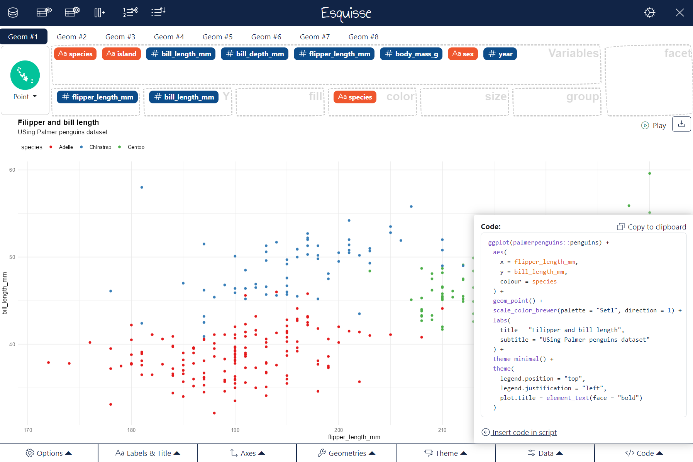

The purpose of this add-in is to let you explore your data quickly to extract the information they hold. You can create visualization with {ggplot2}, filter data with {dplyr} and retrieve generated code.
This addin allows you to interactively explore your data by visualizing it with the ggplot2 package. It allows you to draw bar plots, curves, scatter plots, histograms, boxplot and sf objects, then export the graph or retrieve the code to reproduce the graph.
See online documentation : https://dreamrs.github.io/esquisse/index.html
If you find bugs, please open an issue
Installation
Install from CRAN with :
install.packages("esquisse")Or install development version from GitHub :
remotes::install_github("dreamRs/esquisse")Then launch the addin via the RStudio menu or with esquisse::esquisser().
esquisse addin

Above gif was made with ❤️ by @mfanny and cannot be removed, but in the meantime {esquisse} has evolved, the latest version now looks like:

Internationalization
Currently you can use {esquisse} in the following language:  english (default),
english (default),  french (
french ("fr"),  macedonian (
macedonian ("mk"),  albanian (
albanian ("al"). Activate with:
If you want another language to be supported, you can submit a Pull Request to add a CSV file like the one used for french (file is located in inst/i18n folder in the package, you can see it here on GitHub).
See {datamods} vignette for more on this topic.